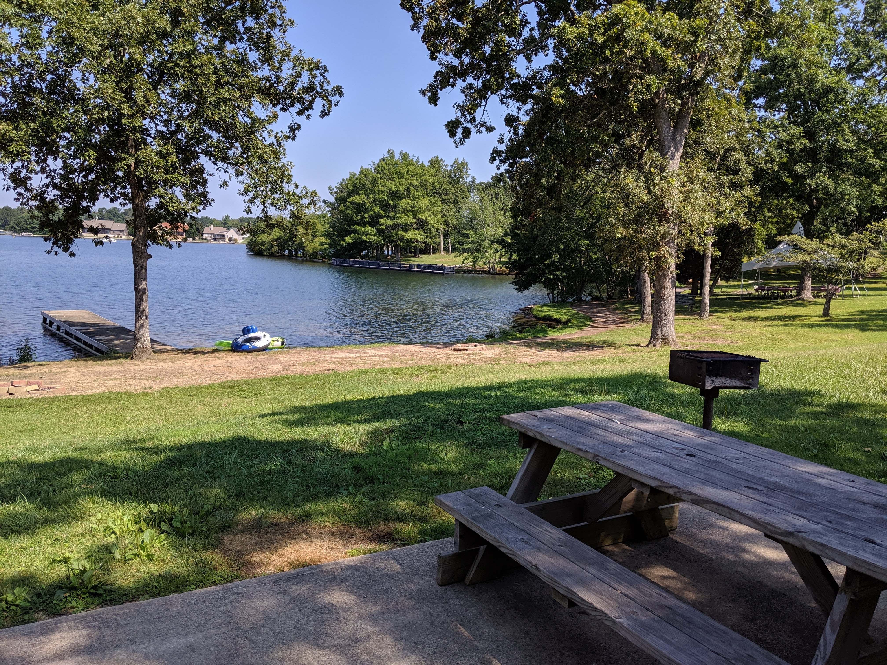
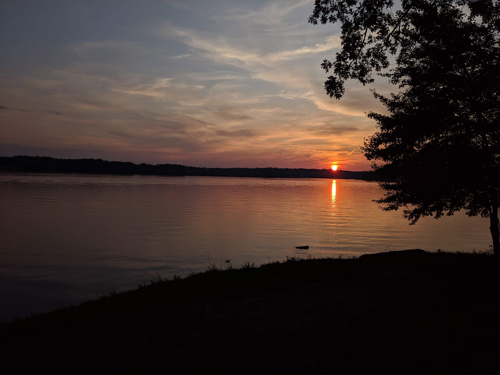
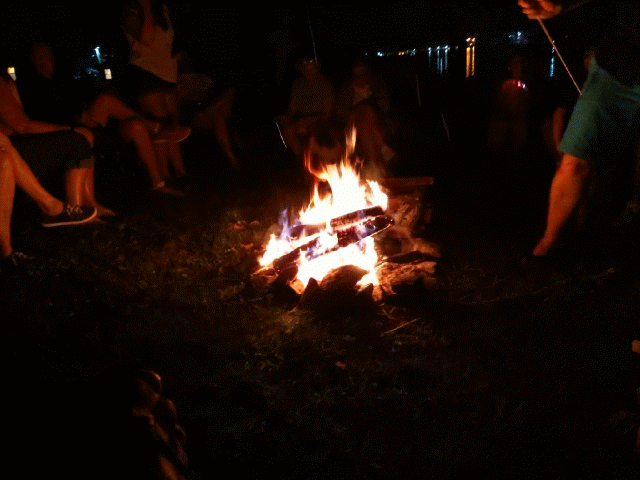

Reunioning the family
The road trip was long — 10.5 hours — but it was worth it. Around 40 of us gathered around a scenic lake to enjoy the beautiful weather in each other's company. The food was delicious — pulled pork, baked beans, mac & cheese, deviled eggs, sopapilla cheesecake... the list goes on. Some would go swimming in the lake. Others skipped rocks across the top. And most of us just enjoyed the view.
A few of us played cornhole. I'm not wont to brag, but each team I was on experienced major win streaksI was lucky enough to get really good partners.

I've viewed many a sunset with my grandparents.
Each night, we would get the campfire going and gather around for some stories. The little kids were treated to some expertly-crafted s'mores by my cousin.
